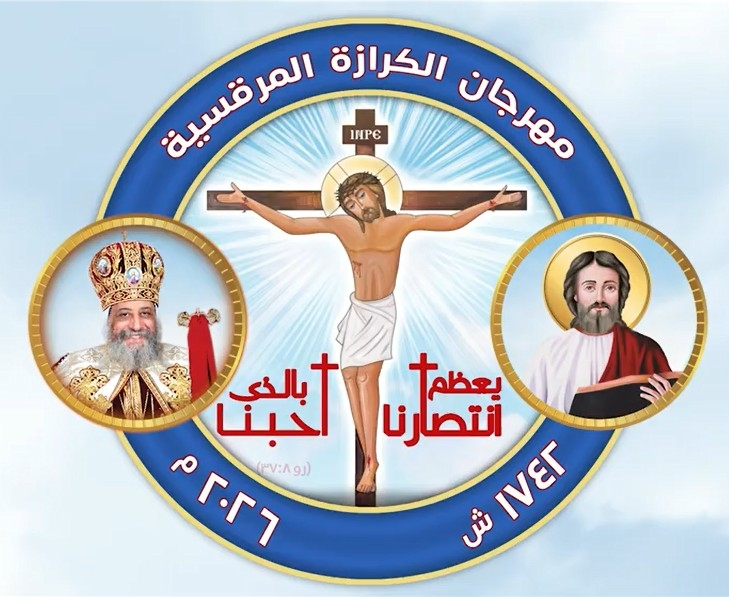

كنيسة الشهيد العظيم مارجرجس شبين الكوم
خورس إعدادي مستوى تانى 2026

مستوى ثاني
لحن البركة : تين اوؤشت
مستوى ثاني
لبش الهوس الأول سنوى


مستوى ثاني
مرد الإبركسيس لعيدي الصليب
مستوى ثاني
برلكس لحن البركة


مستوى ثاني
ابصالية الثلاث فتية


مستوى ثاني